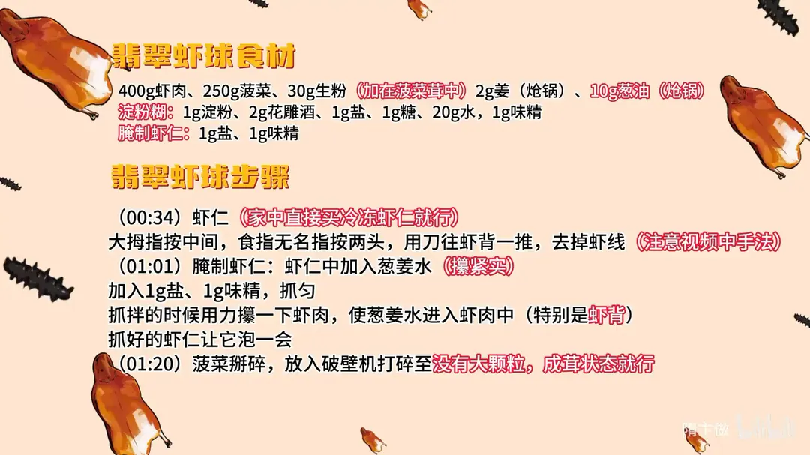
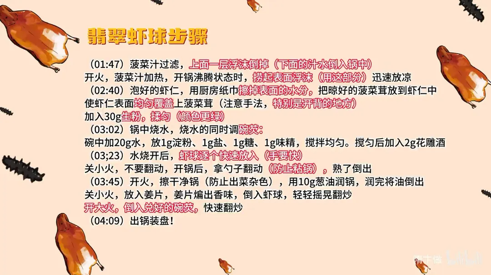

翡翠虾球
隋卞一做。虾肉 400g 用葱姜水腌透，菠菜 250g 打成茸裹匀虾身再拍 30g 生粉，下沸水汆熟；最后葱油姜片炝锅，大火倒碗芡快速翻炒，虾球碧绿清亮。
原视频：https://www.bilibili.com/video/BV1rS411P7fy
食材
虾肉、菠菜 等 14 样
| 类别 | 用料 | 用量 |
|---|---|---|
| 主料 | 虾肉 | 400g |
| 主料 | 菠菜 | 250g |
| 辅料 | 生粉 | 30g（加在菠菜茸中） |
| 腌制虾仁 | 盐 | 1g |
| 腌制虾仁 | 味精 | 1g |
| 腌制虾仁 | 葱姜水 | 适量 |
| 碗芡 | 水 | 20g |
| 碗芡 | 淀粉 | 1g |
| 碗芡 | 盐 | 1g |
| 碗芡 | 糖 | 1g |
| 碗芡 | 味精 | 1g |
| 碗芡 | 花雕酒 | 2g |
| 炝锅 | 姜 | 2g |
| 炝锅 | 葱油 | 10g |
步骤
- 取虾线：大拇指按住虾仁中间，食指、无名指按两头，用刀往虾背一推，去掉虾线。家里直接买冷冻虾仁就行。
- 腌虾：虾仁中加入葱姜水（攥紧实），加 1g 盐、1g 味精抓匀；抓拌时用力攥一下虾肉，让葱姜水渗进虾肉里，尤其是开背的地方；抓好后让它泡一会。
- 打菠菜茸：菠菜掰碎，放入破壁机打碎，打到没有大颗粒、呈茸状即可。
- 熬菠菜汁：菠菜汁过滤，上面一层浮沫倒掉，下面的汁水倒入锅中；开火加热，开锅沸腾时撇起表面浮沫（只用这部分），迅速放凉。
- 裹茸：泡好的虾仁用厨房纸巾擦掉表面水分；把晾好的菠菜茸放到虾仁上，使虾仁表面均匀覆盖，注意开背的地方；加入 30g 生粉揉匀，颜色更绿。
- 调碗芡：锅中烧水，同时碗中加 20g 水、1g 淀粉、1g 盐、1g 糖、1g 味精搅拌均匀，最后加入 2g 花雕酒。
- 汆虾球：水烧开后，虾球逐个快速放入（手要快）；关小火不要翻动，开锅后拿勺子翻动防止粘锅，熟了倒出。
- 炝锅出锅：开火，擦干净锅（防止出菜杂色），用 10g 葱油润锅，润完把油倒出；关小火放入姜片，煸出香味后倒入虾球，轻轻摇晃翻炒；开大火倒入兑好的碗芡，快速翻炒，出锅装盘。
小贴士
- 菠菜汁只用沸腾时撇起的表层浮沫，颜色最绿；下层汁水留着做汤。
- 虾球下锅后先别动，开锅再推，否则茸衣容易脱落。
讲解要点
难度：★★★☆☆（难点是菠菜取色和虾球茸衣不脱）
为什么这么做
- 虾背片开：开背既取净虾线，又让虾肉受热时向内卷成球，成菜才叫「虾球」，开背处也更容易吸味。
- 葱姜水要用力攥进虾肉：靠挤压把葱姜水压进纤维里，再用盐让蛋白质收紧锁水，腥味被带走、底味进到里层而不是只挂在表面。
- 菠菜只取开锅时浮起的那层沫：浮起来的最细，叶绿素都在这儿，颜色最绿；沉在下面的汁颜色发淡发黄，只用下层就出不来翡翠色。
- 捞出来迅速放凉：余温继续加热会让叶绿素变暗发黄，快速降温才把绿色定住。
- 裹茸前擦干虾身，再加 30g 生粉：表面有水茸就挂不住；淀粉遇热结成一层薄膜，把绿色和虾的水分一起封在里面，颜色也更绿更亮。
- 汆水关小火、下完再动：茸衣没定型时一搅就破，开锅后推一下只为防粘。
- 碗芡是「偷芡」：薄芡让成菜表面明亮、盘底不出汤，吃不出黏糊感；最后大火快翻让芡均匀裹上，花雕酒补在碗芡里，量少只留酒香不留酒味。
容易翻车
- 菠菜打得不够细，或用了下层汁，颜色发暗，出不来碧绿。
- 虾仁带水下茸，一汆水茸衣整层脱掉。
- 水没大开就下虾球，或下锅立刻搅动，茸衣破、虾球粘底。
- 芡调厚了成糊；收汁时火不够大，虾球出水，盘底就汪汤。
原片尾卡


原片文案
AI 字幕校准稿
我们视频很早期的时候吃过这么一道菜，翡翠虾球。虾仁脆嫩，没有什么异味，只是虾仁本身的那个味儿，然后加了一个咸鲜的口味。虾仁外面裹的是菠菜茸，但是您吃着没有一点菠菜的味道，炒的时候用葱油炒了一下，有葱油的香味。你看这盘底一点汁都没有，说明他这个芡勾得特别的干净。来吧，不管多远的坑都给你们填上——淮扬名菜、北京饭店镇店菜之一，翡翠虾球。
好，我们准备虾肉。虾肉 31/40 的或者 16/20 的都可以。然后背开一刀，两个手指头，大拇指按中间，这虾就直了，刀往前一推，齐活，就这么简单。片完之后放到一起，加入葱姜水倒进去，加上点盐，有一克盐就行，然后再来一克味精。抓的时候用力挤一下，它就会把那个水分都吸到肉里面去了，这样让它泡一会。
下一步我们处理翡翠虾球外面那个颜色，菠菜。菠菜揪碎就可以了，里面加两碗水，听见叮一声就可以了。看到这个里边没有大的颗粒了，都成泥了就可以了。
好，把它过滤一下，把上面那个沫子倒一下。哎，上面那沫不也得要吗？你跟我们大多数观众都一样，是不对的；试下面的水也是不对的。他凭什么是淮扬菜的代表菜？他凭什么是国宴菜？它是有秘密，感谢互联网。
那里边就是菠菜的汁，很绿。看这汤越来越绿了吧，看着看着就开锅了吧。关火，你们可看好了啊，你明白什么意思吗？用上边浮起来的这些，然后把它放到码斗里边，这会儿就一定要迅速一点，让它快速地凉。
好，我们把虾仁的水分要控一下，家里边有毛巾呀、厨房纸的呀，给吸一下。菠菜蓉放到里边，注意手法，一定要把那菠菜蓉给它揉得很匀，要把那个开背里边也给它抹匀，这个颜色就可以了。然后上生粉，你看淀粉的加入之后，上面颜色就更绿。
我们锅里边开始烧水。然后咱们调一个碗芡，这个菜叫偷芡——勾完芡之后表面很明亮，但是你看不出来黏黏糊糊的感觉。碗里边放点水，放一克淀粉、一克盐、一克味精，再来一克糖，和了匀之后补 2 克花雕酒水。
水烧开，虾球逐个放进去，手要快，这会儿把火关小，不要动它。好，把虾球放完，开大火。这颜色一点都没掉，得有两把刷子啊。开锅了，拿勺子可以动一下，防止粘锅，倒出来可以了，熟了。
炒锅上火，葱油搁锅里润一下，润完以后把锅里的油倒出来，把姜片放进去，给它煸出香味。把虾球倒进去，开大火，碗芡倒进去。
来了啊，这么快来了。我看着比我想象的要难一点，火候差一点点。这个味道很淮扬，它里面吃的是没有菠菜的味道的，我在第一步的时候就已经把那个菠菜煮过了，它就没有菠菜那个味道。而且我们在炒的时候又放姜，又烹了那一点点花雕酒，吃着表面是有一股酒香的。有的咸鲜虾仁吃这种脆弹，你一点花雕酒味道也吃不出来，但是有花雕酒那种香味在里面漂浮着。
如果真是让普通人来看，这就是一个不太容易炒的虾啊，但是里面的门门道道真的还是挺多的。任何一个上国宴的菜，他都有他可以上的理由。那大家回去试一下吧，正儿八经的国宴菜，如果学会了，那可太牛了。